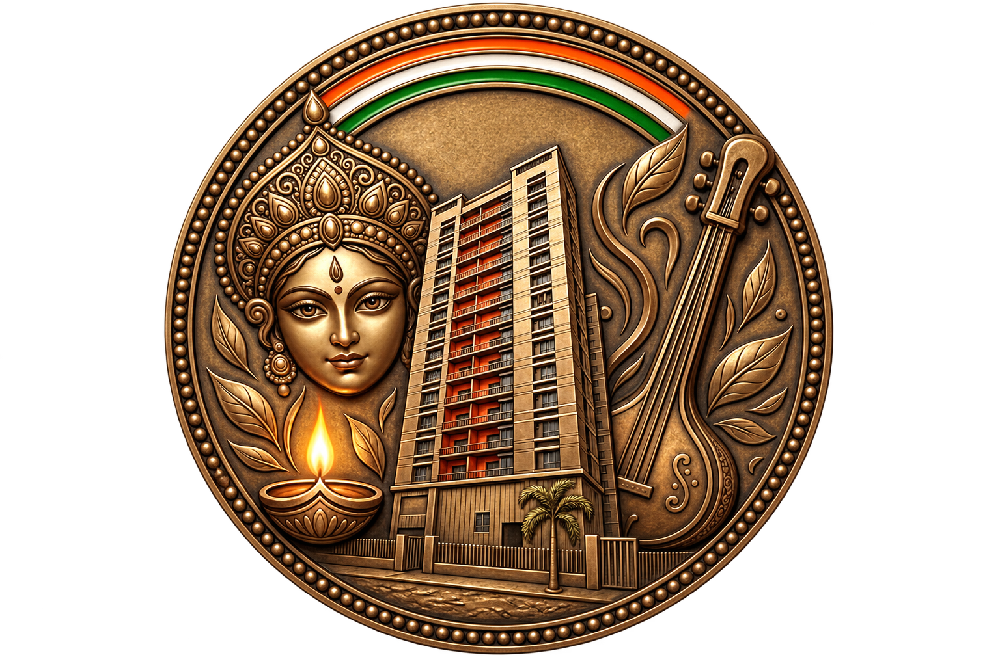

Orchard Avaasa Event Organizing Committee
Annual Durga Puja Lunch 2026
🪔
Registrations Closed
Sorry, all registrations for the Lunch event have closed for Durga Puja 2026.
Last Date was 13th October 2026